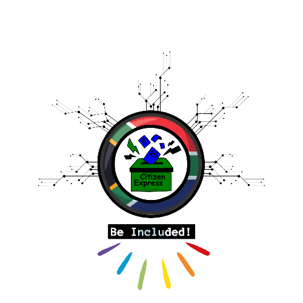

<header>
    <style>
        @import url('https://fonts.googleapis.com/css2?family=Tilt+Neon&display=swap');
        @import url('https://fonts.googleapis.com/css2?family=Ubuntu:wght@300&display=swap');
        @import url('https://fonts.googleapis.com/css2?family=Roboto&display=swap');

        .navbar {
            background-color: #1904828e;;
            overflow: hidden;
            padding: 20px 0px;
            margin: 20px 20px;
            border-radius: 20px;
            text-align: center;
            align-items: center;
            box-shadow: 2px 2px 4px black;
        }

        .navbar a {
            float: left;
            display: block;
            color: white;
            text-align: center;
            padding: 14px 16px;
            text-decoration: none;
            font-family: 'Ubuntu', sans-serif;
            font-weight: 600;
            transition: color 0.8s;
        }

        .navbar a:hover {
            background-color: #7752FE;
            color: black;
            border-radius: 20px;
            font-weight: 600;
            
        }

        .navbar .center {
            display: flex;
            justify-content: center;
        }

        .navbar .logo {
            float: left;
            font-family: 'Tilt Neon', sans-serif;
            font-size: 25px;
        }

        .navbar .logo h1 {
            color:#fff;
            font-size: 25px;
            margin-left: 40px;
        }

        .web-logo {
            display: flex;
            justify-content: center;
            text-align: center;
            align-items: center;
            font-size: 50px;
            font-family: 'Tilt Neon', sans-serif;
            text-shadow: 2px 2px 4px #00f, 0 0 20px #00f, 0 0 30px #00f;
        }

        .web-logo img {
            width: 19%;
            border-radius: 100%;
        }


        @media (max-width: 768px) {
            .navbar {
                padding: 10px 0;
                margin: 10px 10px;
            }
            .navbar a {
                padding: 10px 12px;
            }
            .web-logo {
                font-size: 30px;
            }
            .web-logo img {
                width: 15%;
            }
        }

        ::-webkit-scrollbar {
            width: 12px;
        }

        ::-webkit-scrollbar-thumb {
            background: lime;
            border-radius: 5px;
        }

        ::-webkit-scrollbar-track {
            background: transparent;
        }

    </style>

    <div class="web-logo">
        CitizenExpress
    </div>

    <div class="navbar">
        <div class="center">
            <a href="index.html">Home</a>
            <a href="about.html">About</a>
            <a href="faq.html">FAQ</a>
            <a href="signin.html">Sign-In</a>
            <a href="signup.html">Sign-Up</a>
        </div>
    </div>
</header>

